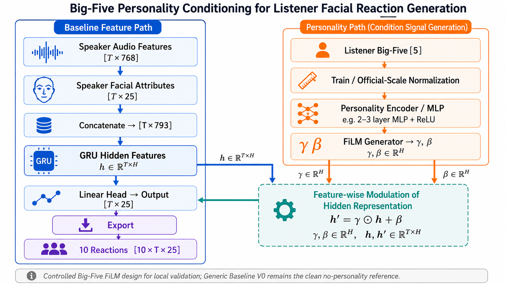

REACT2026 submission-readiness progress
From local validation to safe submission candidate
June 22 updateGeneric V0 is now the safe baseline candidate for REACT2026 submission-format confirmation. Training, validation export, all-625 test inference, PRED-only fallback packaging, and clean-unzip bundle smoke checks are complete.
Latest submission-readiness dashboard, 2026-06-22.
Current research claim
Generic V0 is the current safe submission candidate because it is auditable, runnable, and format-checked. Big-Five FiLM remains a controlled research extension, not the emergency final submission model, until the official submission route is confirmed.
Current submission-safety flow
Click stepsSafe baseline candidate
verifiedGeneric V0 is the current safe baseline candidate because it is simple, auditable, trained, and runnable without personality labels, EEG, LLM intent, or new risky architecture changes.
Fixed project contract
Baseline vs Big-Five injection
method diagramThe target is unchanged in both paths: generate 10 plausible listener facial reaction sequences in [10, T, 25] shape. The difference is whether listener personality is injected into the generation pathway.

Generic V0 baseline
Big-Five V1 personality path
What changes
The backbone still solves the same listener reaction generation task. Big-Five V1 adds a conditioning signal, not a new target.
Why FiLM
FiLM keeps the injection controlled: Big-Five traits scale and shift learned hidden features instead of replacing the speaker-driven context.
How it is checked
The method is compared with zero Big-Five, shuffled Big-Five, and no-condition identity controls before treating the signal as meaningful.
Controlled experiment design
Why this is interpretableThe Big-Five result is not treated as meaningful unless it beats controls that test adapter capacity, random traits, and the no-condition pathway.
Main candidate. Listener Big-Five scaled from official 1-5 range to 0-1.
Checks whether added adapter capacity alone explains the gain.
Checks whether arbitrary trait vectors can create the same improvement.
Checks whether the FiLM pathway helps even without personality input.
Protected baseline
Generic V0 stays unchanged. It remains the clean no-personality and no-EEG internal comparison baseline.
Data boundary
Training uses train personality only. Validation uses validation personality for evaluation checks. Test personality is not used for training or model selection.
Current caveat
Local validation evidence is promising, but the official-style metric path still needs careful alignment before making challenge-level claims. The absolute MSE differences are modest, so the claim is a consistent controlled signal rather than a large performance jump.
Evidence explorer
5 matched seeds
Official-scale listener Big-Five FiLM has the lowest 5-seed mean cropped-validation MSE.
Cropped-validation result
MSE 5/5 winsReadout
Official-scale true Big-Five is best in the 5-seed mean cropped-validation comparison. The key interpretation is strongest against shuffled and no-condition controls; MAE is used as a sanity metric, not as the main control-ordering claim.
Full-validation export check
shape OKThe same branch remains best by mean MSE after exporting full validation sequences. This page is primarily an engineering completeness and submission-shape check: all outputs pass finite checks and required shape checks.

Full-export aggregate
571 samples/runConservative detail
The full-export comparison against zero is directionally positive, but its MSE confidence interval slightly crosses zero. The clean claim should emphasize strongest evidence over shuffled and no-condition controls, not a final proof over every control.
Submission confirmation gate
2026-06-22The current safe route is a model package with source code, Generic V0 checkpoint, README, reproducible inference commands, and smoke-test evidence. Do not start new training or change the generator until the organiser confirms the exact submission format.
Candidate bundle: generic_v0_safe_submission_bundle_2026_06_22.zip; SHA256 7A3FE74D1C820FDDE66E59C68753D0DB60EC8EE990C458C9D84A385A23CC8D2E.
1. Confirm route
Ask whether the primary submission should be code + checkpoint + README, precomputed predictions, or both.
2. Confirm output scope
Clarify whether EEG, rendered videos, 3DMM, or AFR outputs are mandatory for the selected facial-reaction route.
3. Confirm deadline
Use June 26, 2026 as the internal freeze date unless organisers confirm the later June 28 deadline.
4. Freeze safely
Only make README or archive-layout changes after confirmation, then rerun clean-unzip smoke.
Current package state
not final uploadReady
Generic V0 training, 571-row validation export, 625-row test inference, PRED-only fallback, and safe bundle smoke checks are complete.
Unconfirmed
Exact official archive layout, prediction-file acceptance, EEG requirement, rendered-video/3DMM requirement, and final date still need confirmation.
Guardrail
No new training, dataset-class change, loss change, EEG fabrication, or LLM-in-training connection is recommended before submission-format confirmation.
研究主线复盘 · 导师理论板块
一图流导师想法 → 当前进度 → 下一步 · 2026-06-22
核心结论：目前已经落实到 "研究设计 + offline evidence layer"，但还没有进入 "model training intervention"。这不是缺点，而是正确节奏——如果现在直接接入模型，很容易分不清提升究竟来自 personality、intent、FiLM 结构，还是 evaluator 偏差。
导师原始想法：从 speaker 多模态信息和 listener 个性出发，先判断 listener 应产生什么反应意图，再把意图作为条件信号输入生成模型，最后用 dyadic evaluator 判断生成反应是否和 speaker 同步、自然、合理。我们目前完成的是更安全的前置层。
9 大流程 · 状态总览
左侧「09 详情」可看每步展开目前最重要的四个判断
1 · Generic V0 是 clean baseline
不能随便改。它是所有 personality / intent / synchrony 分析的对照基线。
2 · Big-Five 没被推翻，但不是全面提升
有 controlled evidence，但未在所有指标全面赢。应说 "Big-Five is promising, but its effect is selective and needs interpretation"。
3 · Big-Five 更像影响 style / intensity
影响 reaction style / intensity / reconstruction-like behavior，但不明显改善 temporal synchrony。
4 · Timing / synchrony 需单独机制或单独分析
可能需 intent timing label / dyadic synchrony evaluator / lag-aware objective / separate timing mechanism；现在不能直接加 synchrony loss。
接下来做什么
1 · review intent pilot
先把 top-20 / 50 draft labels 变成 reviewed labels。没人工 review，不要训练。
2 · 解释 Big-Five 何时有效
按 intent / affect group 分析：Big-Five / no-condition 各自何时更好？哪些 reaction type 更需 personality？
3 · 最小 smoke test
解释力足够再做，非大训练：Big-Five only / +true / +shuffled / +no intent。
4 · 暂不加 synchrony loss
当前证据不支持把 sync score 当 loss；先让分析层站住，再考虑训练介入。
现在的重点不是继续堆训练，而是先把 "为什么有效、什么时候有效" 解释清楚。
九大流程 · 逐项展开
导师想法 / 当前已做 / 为什么 / 风险 / 下一步每个流程按五块结构复盘。虚线状态参见「08 主线复盘 · 一图流」的总览表。
Speaker 多模态输入
输入应含 speaker audio / video / text / context + listener personality——不只看声音和脸，还看语义文本、上下文，以及 listener 个性信息。
稳定使用 speaker audio、speaker video / facial、listener facial、listener Big-Five；text / transcript / semantic context 尚未稳定接入。
挑战核心输入本就是 speaker audio-visual behaviour，text 暂非必须；text / context 留给未来 LLM intent predictor。
test split 只用于最终官方评估，不进入训练、调参、schema 设计、模型选择或分析。
保持现有输入稳定；若做 LLM intent，再检查 transcript / ASR / session context 能否安全映射到样本。
LLM Reaction Intent Predictor
用小 LLM 根据 speaker context + listener personality 预测 listener 应做什么反应（高层意图，不直接生成脸）。例：开心 → amusement / agreement；困难经历 → empathy / concern；疑惑 → confusion / attentive。
还没在线 / 训练时调用 LLM；已做 offline intent/affect schema、top-20/50 pilot package、annotation guide、validator、visual-only draft labels。
我先替代 LLM 做小规模人工 review，验证 schema 合理性、类别可理解性、labels 能否解释 Big-Five 何时有效。schema 合理才值得让 LLM 大规模生成 draft。
暂时不做 online LLM inference；draft labels 不能直接当结论。
先人工 review top-20 / 50；验证后再走 LLM offline draft → human review → larger annotation set。
反应意图 / 时机 / 强度
Reaction Category · Communicative Intent · Timing · Intensity
predictor 不应只输出单一 emotion label，而要输出 reaction category / communicative intent / expected timing / expected intensity——回答"做什么、何时、多强"。
- 第一层 affect profile（对齐官方输出空间）：expected VA、primary + secondary expression、expected AU pattern
- 第二层 communicative intent：neutral_attention / backchannel / agreement / amusement / empathy_concern / surprise / confusion / discomfort / encouragement / low_response / unclear
不能把 VA / Ekman emotion 直接等同 intent（Happy 可能 = amusement / agreement / polite backchannel）。observable form ≠ social function。
第二层不是官方 label，是为研究导师 idea 设计的内部分析字段；schema 仍需人工 review。
先 review top-20 / 50 样本，看 intent / affect labels 是否能解释 Big-Five 何时有效、何时无效。
★ Top-20 / Top-50 Intent Pilot
介于 schema 设计（P3）与条件信号接入（P4）之间的评审闸门
不是官方排名、也不是 test set，而是从 validation samples 挑出的内部 pilot 样本，用来做 intent / affect annotation。
- Big-Five 与 no-condition 差异大
- official-style 与 synchrony metrics 冲突
- 模型分歧大；覆盖不同 session、reaction 类型与强度
- 结构：split、session_id、clip_id、speaker clip+features、listener GT、model predictions、selection_reason、rank_score、draft label
- review：VA、expression、AU pattern、communicative_intent、timing、duration、intensity、confidence、evidence_notes
draft 多为 visual-only / Codex 生成，不能直接训练、也不能当强结论。目的是建立小规模可信 reference。
pilot package 已有基础，reviewed labels 未完成。先 review top-20：有规律再扩 top-50；没规律先修 schema。
Conditioning Signal
intent 最终应变成 conditioning signal：intent label → embedding → generator conditioning，未来接到 Big-Five FiLM 或 PerFRDiff。
还没把 intent 接进模型；没训练 intent-conditioned model；没改 Baseline_REACT / PerFRDiff / Big-Five FiLM 主训练逻辑。
还不知 intent label 是否有解释力；没 review 直接接会分不清 schema / 模型 / capacity gain，徒增复杂度、模糊结论。
暂时不接是正确的。
intent-group analysis 证明有解释力后才做最小 smoke test：Big-Five / +true / +shuffled / +zero·no intent。
Generator 主体
Baseline_REACT · PerFRDiff · Big-Five FiLM
生成模型可为 Baseline_REACT / PerFRDiff / Big-Five FiLM generator，以 intent / personality 为条件，生成 listener facial attributes。
Generic V0 clean baseline、Big-Five FiLM branch、true / shuffled / zero controls、no-condition identity control、validation export、shape check、本地 official-style metric alignment。
有足够基础做 controlled analysis，但当前不适合新的大训练；更重要的是解释已有结果（Big-Five 帮了什么？no-condition 为何强？）。
不能说官方 baseline 已完整复现——做过 dataloader / forward smoke / metric alignment 准备，但 pretrained weights 不完整。
先解释结果，不急大训练；若 intent review 有价值，再做最小 intent-conditioned FiLM smoke test。
Generated Facial Attributes
输出形状 [10, T, 25]：10 = 每个 speaker clip 生成 10 条候选 listener reaction；T = 帧数；25 = 15 个 AU + 2 个 Valence/Arousal + 8 个 expression probabilities。
listener reaction 是 one-to-many：同一 speaker 行为可有多个合理 response——微笑、点头、保持 neutral attention 都可能合理。
validation export 已完成；shape [10, T, 25] 之前已通过；对齐官方挑战输出空间。
继续把 [10, T, 25] 作为所有分析的统一输出格式；后续 intent / synchrony / metric analysis 都基于它。
Dyadic Reaction Quality Evaluator
判断 listener reaction 与 speaker 是否构成合理 dyadic relationship。dyadic ≠ "双向"，而是"双人互动"：speaker = A、listener = B，dyadic quality = B 的反应是否像在回应 A。
offline synchrony evaluator——看 speaker seq vs generated listener seq；用 lagged correlation、TLCC-like synchrony、DTW 对齐、VA/AU/expression 分块分析。
Generic V0 / no-condition 在部分 timing / synchrony 指标更强；true Big-Five 不明显改善 temporal synchrony；Big-Five 更影响 style / intensity。
它只是 offline diagnostic，不是最终质量评价器、也不是 loss。继续作分析工具，暂不直接当 training loss。
Synchrony Score / Quality Rating
自己做的 offline diagnostic score，不是官方最终 metric；参考官方 synchrony 维度 + 经典时序对齐。官方 evaluation 本身含 synchrony（TLCC / FRSyn），主要用于最终评估 / 排名。
offline synchrony ranking 与 official-style ranking 不完全一致——不同指标捕捉不同维度（official-style = 最终评价；MAE = reconstruction/style；FRC 受整体趋势影响）。
- L1 official / official-style metrics
- L2 经典时序：TLCC / lagged corr / DTW / Soft-DTW
- L3 task-specific：按 VA / AU / expression / intent group
不说"sync score 证明 Big-Five 无效"。应说：offline synchrony diagnostic suggests Big-Five does not clearly improve timing alignment in the current setting, while official-style metrics and synchrony metrics capture different aspects of reaction quality.
Loss / Reward Signal
最终可把 dyadic evaluator 结果变成 auxiliary loss / reward signal / small reward model / quality score，反向优化 generator。
还没加 loss、reward learning、synchrony loss；没有改训练。
- offline synchrony 与 official-style 排名不一致；不知优化 synchrony 是否提升 official performance
- 可能牺牲 diversity / realism / appropriateness；intent 未 review；evaluator 仍是 diagnostic 非 validated reward model
暂不加入训练是正确的。等 intent 与 synchrony 分析更清楚后，再考虑 small auxiliary loss experiment / reward model pilot / intent-conditioned FiLM smoke test——现在不做大训练。